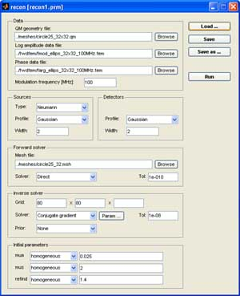

This example demonstrates how to use the GUI interface for setting up
reconstruction parameters. It performs a 2D reconstruction from simulated
measurements.
In the following checklist, $TOASTDIR refers to the TOAST root directory.
If you haven't done so yet, make sure that the MATLAB path definition includes
the TOAST mex and script directories. The easiest way to do this is to run the
mtoast_install script in the TOAST root directory. This script adds the necessary
paths for the running MATLAB session and opens the pathtool dialog box to allow
storing the paths permanently.
cd $TOASTDIR
mtoast_install
Change the working directory to $TOASTDIR/test/2D/matlab.
cd $TOASTDIR/test/2D/matlab

Launch the GUI reconstruction interface.
recon_gui
This brings up a dialog box which allows access to all reconstruction
parameters.
Load a parameter file into the GUI. Click 'Load' to open
the file dialog. Load the 'recon1.prm' parameter file in the current directory.
This loads the data files and reconstruction parameters for the example.
Launch the reconstruction. Click 'Run' to start the
reconstruction of the absorption and scattering distributions with the
selected parameters.